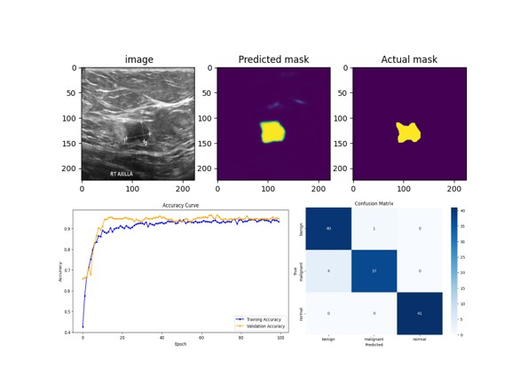

Medical Imaging
Segmentation
Hybrid Model
Breast Cancer Segmentation-Guided Hybrid
Classification
Dataset:
BUSI and BUSI_Corrected
Methods:
U-Net · CNN feature fusion
Tasks:
Segmentation · Classification
The project uses a two-stage pipeline. First, U-Net is trained on BUSI images with ground-truth masks to identify breast lesions. The generated lesion regions are then used to train a hybrid classifier for normal, benign, and malignant classes. Evaluation includes accuracy and loss curves, multiclass ROC analysis, a confusion matrix, and class-level performance metrics.
